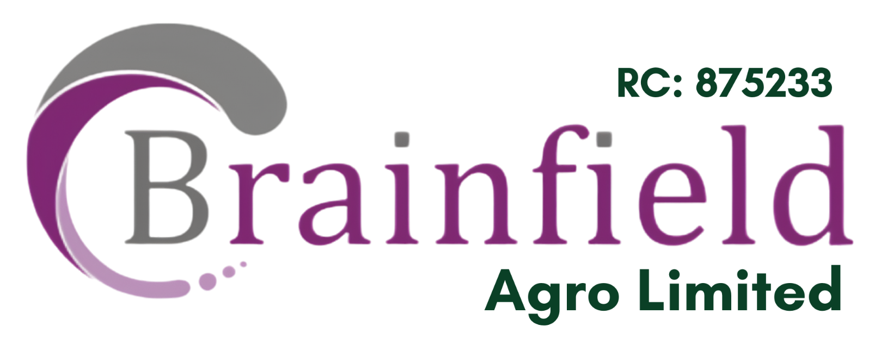

RC 875233 · Agro-allied productionRice, done right — from farm to table
Brainfield Agro Limited is an agro-allied services and production company, and owner of the Brainfield Rice Mill Factory — working with community-based smallholder farmers to grow, purify and mill Ofada (brown) rice for a quality-conscious, ever-growing market.
2.5 acres
Sited along Ido-Eruwa Road, home to a hi-tech automated rice processing line.
Ofada rice, raised to a global standard
Ofada rice — a brown rice mostly grown in South-West Nigeria — carries a deep cultural attachment for the communities that grow it. Brainfield Agro works directly with community-based smallholder value chain actors to increase production of Ofada rice, while enhancing its quality and branding to meet international standards and the expectations of an ever-growing number of consumers.
It's a model built on partnership rather than extraction: farmers grow, Brainfield purifies, processes and brands — and the value created moves back through the whole chain.


Built for scale, sited for access
The Brainfield Rice Mill Factory sits on 2.5 acres of land along Ido-Eruwa Road, running a hi-tech automated rice processing line with an installed capacity of 25 tons per day — with an immediate plan to raise that to 150 tons per day before the end of the year.
2.5-acre site
Purpose-sited along Ido-Eruwa Road for straightforward access to farms and market.
Automated processing
A hi-tech automated line handles purification, milling and grading with consistent quality.
25 → 150 tons/day
Capacity is expanding six-fold this year to meet rising demand across the value chain.

A walk through the mill
See the automated processing line and the land around the Ido-Eruwa Road factory.27 hectares, ~100 farmers, one value chain
Brainfield Agro holds 27 hectares of land in Ido Local Government, presently planted with rice to be distributed as seed to our outgrower farmers after purification — almost 100 smallholders strong.
27 hectares planted
Company-held farmland in Ido LG is planted with rice earmarked for seed.
Purified & distributed
Harvested seed is purified, then distributed to outgrower farmers to plant.
~100 outgrower farmers
Smallholders across the community grow the crop as part of the value chain.
Buy, supply, or grow with us
Whether you're a distributor sourcing quality Ofada rice, or a farmer in the Ido area interested in the outgrower programme — reach out.